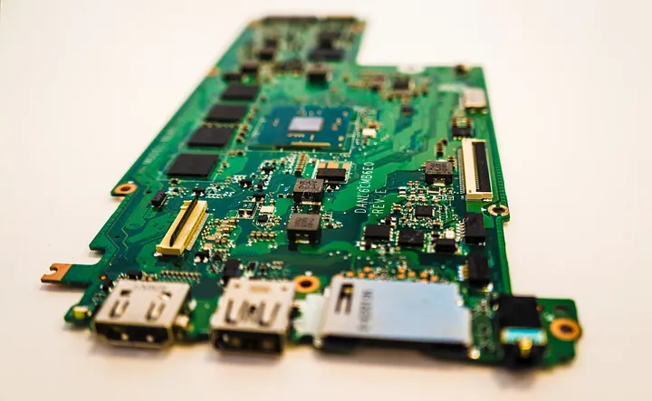

Predstavitev Chipsetov

Chipset
Chipseti so možgani matične plošče.
Povezujejo vse komponente
in upravljajo podatke med CPE, GPE in RAM.
Kje se chipseti uporabljajo
Uporabljajo se v računalnikih, telefonih itd.
Telefoni imajo chipset (SoC)
kjer so CPE in GPE povezani v en chipset.
Northbridge
Northbridge je uporabljen za komunikacijo med procesorjem in RAM-om
Southbridge
Southbridge je uporabljen za upravljanje I/O priključkov, kot so USB priključki in SATA konektorji
Kaj je SoC
SoC ali System on Chip je najpomembnejši del telefona. Povezuje south in northbridge v en chipset
SoC se uporablja v vsakodnevnih aplikacijah, pri igranju igric, in včinkuje na hitrost naprave.

Izdelovalci chipsetov
AMD
Intel
MediaTek
Qualcomm snapdragon
Kaj je FSB
FSB ali front-side bus je bil večinoma uporabljen v Intel čipih v 1990.
Uporabljeno je bilo za prenašanje podatkov med CPU in južnim mostom
Kaj je QPI
QPI ali QuickPath Interconnect je nadomestil FSB
začelo se je uporabljati leta 2008. Je izboljšana verzija FSB
Kaj je HT
HT ali HyperTransport je uporabljen za komunukacijo med drugimi komponenti sistema v AMD.
HyperTransport je podoben QPI.
Kaj je DMI
DMI ali Direct Media Interface omogoča povezavo med severnim mostom in procesorjem.
Začelo se je uporabljati leta 2004 in je bilo ustvarjeno od Intela
Kaj je UMI
UMI ali Unified Media Interface omogoča povezavo med AMD APU in FCH.
Podobno je Intelovem DMI in temelji na PCI express
Kaj je PCH
PCH ali Platform Controller Hub Združi južni in severni most v eno.
PCH je ustvaril intel leta 2009. Prvič se je pojavilo v Intel seriji 5
Kaj je FCH
FCH ali Fusion controller hub so bili uporabljeni z AMD APU med letom
2011 in 2017. FCH je zelo podobn PCH
Kviz
Link do kviza
Opis skupine
Liam Simonič - Stran
Blaž Kavalar - Powerpoint
Liam Dašević Zobić - Word
Iztok Žakelj - Kviz
Viri
Vsi viri dostopni 20. 09. 2024
https://hp.com/us-en/shop/tech-takes/what-is-a-chipset https://techopedia.com/definition/2172/chipset https://pcmag.com/encyclopedia/term/pc-chipset https://openai.com/chatgpt https://medium.com/@adamuharoun.7/what-you-need-to-know-about-mobile-phone-chipsets-fd8d1a535f8c
Pravice pridržane samo za obliko